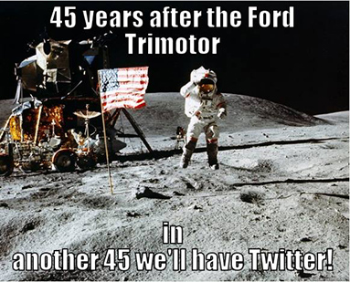

2014년 7월 21일
1969년이라는 시간이 당신에게 다가와 묻는다. 2014년이라는 먼 미래에는 도대체 어떤 경이로운 것들이 있느냐고.
당신은 카메라에 대해 설명한다. 1969년의 사람들이 알기로 카메라는 암실에서 현상하는 데 며칠씩 걸리는 필름이 가득 찬 육중한 상자였지만, 이제는 셔터를 누르는 즉시 친구에게 전송할 수 있으며 화질 또한 훨씬 뛰어나다고 말이다. 게다가 동영상 촬영까지 가능하다.
과거의 음악은 크고 비싼 레코드판이었으나, 이제는 아이팟(iPod) 하나에 3,000곡을 담을 수 있으며, 불법 다운로드 방법이나 유튜브(YouTube)에서 오디오를 추출하는 법만 안다면 이 모든 곡을 무료로 얻을 수 있다.
텔레비전은 HDTV와 플라스마 화면으로 진화했을 뿐만 아니라, 시청자의 선택지 또한 "지금 방송되는 것"이나 "현재 상영 중인 영화" 수준에서 "지금껏 제작된 거의 모든 쇼나 영화를 원하는 시간에 언제든" 볼 수 있는 수준으로 완전히 바뀌었다.
컴퓨터는 몇 킬로바이트(Kb)의 메모리와 천공 카드 기반 인터페이스를 갖춘 채 방 전체를 가득 채우던 구조물에서, 이제는 몇 테라바이트(Tb)의 메모리와 터치스크린 인터페이스를 갖추고 한 손에 들어올 만큼 작아졌다. 또한 이제는 프린터, 마우스, 스캐너, 플래시 드라이브와 같은 주변 기기들도 갖추고 있다.
레이저는 특수 저온 챔버에서만 작동하던 수준에서 상온 작동이 가능해졌고, 주머니에 들어갈 정도로 작아졌으며, 이제는 슈퍼마켓 계산대 같은 아주 기본적인 곳에서도 흔히 볼 수 있는 물건이 되었다.
전화기는 때때로 교환대를 거쳐야 했던 다이얼식 유선 전화에서 주머니에 쏙 들어가는 휴대전화로 진화했다. 하지만 이보다 더 나은 것은 이 모든 단계를 완전히 건너뛰어, 전 세계 어디에 있든 누구와도 무료로 영상 통화를 하는 것이다.
이제 로봇은 집안을 진공 청소하고, 잔디를 깎고, 사무실 건물을 청소하며, 수술을 집도하고, 재난 구호 활동에 참여하며, 인간보다 더 능숙하게 운전한다. 가끔 당신이 나쁜 사람이라면, 로봇이 하늘에서 급강하해 당신을 죽일지도 모른다.
좋든 싫든, 이제 비디오 게임이라는 것이 존재한다.
의학은 CAT 스캔, PET 스캔, MRI, 체외충격파 쇄석술(lithotripsy), 지방흡입술, 레이저 수술, 로봇 수술, 그리고 원격 수술을 얻었다. 폐렴, 수막염, 간염, HPV, 수두 백신도 개발되었다. 세프트리악손(Ceftriaxone), 푸로세미드(furosemide), 클로자핀(clozapine), 리스페리돈(risperidone), 플루옥세틴(fluoxetine), 온단세트론(ondansetron), 오메프라졸(omeprazole), 날록손(naloxone), 서복손(suboxone), 메플로퀸(mefloquine), 그리고 비아그라(Viagra)까지 등장했다. 인공 심장, 인공 간, 인공 와우, 그리고 사용자가 올림픽에 출전해 경쟁할 수 있을 만큼 정교한 인공 다리도 만들어졌다. 인공 눈을 가진 사람들은 기껏해야 모호한 형태 정도만 식별할 수 있지만, 그 성능은 매년 개선되고 있다.
세계 인구는 세 배로 증가했는데, 이는 상당 부분 새로운 농업적 이점 덕분이었다. 파멸적인 재난은 훨씬 드물어졌으며, 이 또한 상당 부분 건축 기술의 발전과 우주에서 날씨를 관측할 수 있는 위성 덕분이었다.
우리에게는 무언가를 입력하면 그 질문과 관련된, 지금까지 사람들이 쓴 모든 글을 알려주는 상자가 있다.
우리는 전 세계 어디서든 접속하여 인류가 가진 거의 모든 지식에 접근할 수 있는 공간을 가지고 있다. 1956년 롤러하키 월드컵(Roller Hockey World Cup)의 모든 경기 결과부터, 이제는 쓰이지 않는 어느 항정신성 약물의 85가지 서로 다른 부작용에 이르기까지 말이다. 이 모든 것은 즉각적으로 검색 가능하다. 이곳의 주된 문제는 사람들이 너무나 많은 정보를 추가하려 한다는 점이며, 그 때문에 (자원봉사자로 구성된) 운영진은 불필요할 수 있는 정보를 삭제하느라 끊임없이 분주하다.
우리는 거의 모든 주요 인간 언어를 다른 어떤 주요 인간 언어로든, 비용 없이 즉각적으로, 그리고 비교적 높은 정확도로 번역할 수 있는 능력을 갖추게 되었다.
우리의 내비게이션 기술은 지난 50여 년 동안 '지도와 나침반' 수준에서, 목적지 이름만 말하면 작은 상자가 어느 방향으로 가야 할지 단계별로 알려주는 수준으로 발전했다.
앞서 언급한 카메라, TV, 음악 플레이어, 화상 전화기, 비디오 게임기, 검색 엔진, 백과사전, 범용 번역기, 그리고 내비게이션 시스템이 모두 하나의 작은 검은 직사각형 안에 통합되어 있다. 이 기기는 주머니에 쏙 들어가고, 자연어 음성 명령에 반응하며, 가격이 매우 저렴하여 에티오피아의 자급농들이 소를 팔 때 일상적으로 사용할 정도다.
하지만 당신은 1969년의 사람들에게, 그보다 훨씬 더 놀라운 것이 있다고 말한다. 상상조차 할 수 없는 무언가가 있다고 말이다.
“우리에겐,” 당신은 말한다. “지난 45년 동안 기술 발전이 정체되었다고 믿는 사람들이 있습니다.”
1969년의 머리가 터져 나간다.
달 착륙 기념일이 돌아왔다. 즉, 이런 밈(meme)을 퍼뜨리는 사람들을 상대해야 한다는 뜻이다.

하지만 최근 이곳에서 기술적 진보가 1972년에 멈췄는가에 대해 논의한 것을 두고 날짜 탓을 할 수는 없을 것이다.
따라서 나는 잠시 시간을 내어, 미래학의 특정한 흐름에 대해 비판해 보고자 한다.
사람들은 무언가 정말 멋져 보이는 것을 상상하고, 50년 동안 열심히 노력한다면 그것을 실현할 수 있을 것이라고 예측하곤 한다. 그러고 나서 50년이 지났을 때, 정작 그 일에 대해 제대로 된 연구나 작업이 거의 이루어지지 않았다는 사실을 깨닫게 되면, 그들은 누군가 탓할 대상을 찾기 시작한다.
화성 탐사 임무. 달 식민지. 거대 부유 태양광 발전 위성. 해저 돔. 10마일 높이의 아콜로지(arcologies). 휴머노이드 로봇.
실제 기술은 단순히 멋져 보이는 방향으로 나아가지 않는다. 정부나 재벌이 '멋짐'이라는 가치에 막대한 자금을 쏟아붓지 않는 한 말이다. 실제 기술은 유용하고 수익성이 있는 방향을 향해 경사 하강법(hill-climbing)식으로 발전한다.
우리는 왜 아직 우주를 식민지화하지 못했을까? 남극을 식민지화하지 못한 이유와 같다. 너무 춥고, 딱히 즐거운 일도 없으며, 밖으로 나가는 순간 죽기 때문이다.
사실, 거의 모든 면에서 남극이 우주보다 낫다. 남극 식민지화를 끝내기도 전에 우주를 식민지화해야 할 이유는 전혀 없다. 그리고 네브래스카(Nebraska, 인구 밀도: 제곱킬로미터당 9명)의 식민지화를 끝내기 전까지는 남극을 식민지화할 이유조차 없다.
나는 설령 초등학생들이 일상적으로 화성으로 현장 학습을 갈 수 있을 만큼 우주 비행 기술이 발달한다 하더라도, 화성에는 결국 두세 개의 과학 기지와 관광객들이 올림푸스 몬스(Olympus Mons)에서 사진을 찍을 수 있는 리조트 하나, 그리고 매우 헌신적인 자유지상주의자들의 집단 거주지 정도만 남게 될 것이라고 주장하는 바이다. 돔 형태의 도시 같은 건 없을 것이다. 독립을 위해 투쟁하는 식민지도 없을 것이다. 이것이 불가능해 보이는가? 학생들은 지금도 모하비 사막(Mojave Desert)으로 현장 학습을 자주 가지만, 그곳의 모습은 대체로 이와 비슷하다. 화성이 훨씬 더 거주 가능한 비교 대상 지역보다 더 번영해야 할 이유가 어디 있겠는가?
마찬가지로, 우리가 해저 돔을 짓지 않는 이유는 능력이 부족해서가 아니다. 인간은 육지에서 더 숨쉬기 편하고, 아직 살 만한 땅이 많이 남아 있기 때문이다. 드물게 수중에 있는 자원이 필요할 때는 그 위에 석유 시추선을 세워 표면에서 펌프질해 끌어올린다. 즉, 무언가 잘못되었을 때 10기압의 압력에 즉각 짓눌려 죽지 않아도 되는 바다 구역에서 작업을 한다는 뜻이다.
그리고 높이 10마일에 달하는 아콜로지(arcology)가 존재하지 않는 이유는, 우리가 이미 모든 탐나는 부동산을 9.9마일 높이의 아콜로지로 가득 채운 뒤에도 여전히 공간이 더 필요하다고 판단한 적이 없기 때문이다.
공상과학 소설가들과 예언가 지망생들은 "과연 누군가 이것에 합리적인 비용을 지불하겠는가?"라는 질문을 계산식에 넣기를 완강히 거부한다. 그래서 그들은 10년마다 한 번씩 '스마트 하우스'를 예측하곤 한다. 휴대폰 하나로 집안 어느 방의 전등이든 제어할 수 있는 집 말이다! 미래학자들이 부엌에 앉아 "아, 안 돼! 침실 불을 켜고 싶은데, 내 손엔 휴대폰밖에 없잖아!"라고 생각하는 모습이 그려진다. 언젠가는 밖으로 나가지 않고도 세상 어느 건물로든 이동할 수 있는 텔레포터가 설치된 집이 생길지도 모른다. 하지만 당신이 부엌에 있는데 텔레포터실의 불을 켜고 싶다면, 당신은 여전히 그냥 텔레포터실까지 걸어가서 그 빌어먹을 스위치를 올릴 것이다.
내가 이것을 진보가 이루어져야 하는 방식에 대한 규범적 관점으로 옹호하는 것은 아니다. 지구에 예상치 못한 일이 발생할 경우를 대비한 생존 전략으로서 화성을 식민지화하는 것에는 충분한 타당성이 있다. 또한, 현재의 위치와 우리가 원하는 목표 사이의 매 단계마다 수익성 있는 과도기적 형태가 존재하지 않는 영역에서, '언덕 오르기(hill-climbing)' 방식이 아닌 맨해튼 프로젝트(Manhattan Project) 스타일의 노력으로 기술을 발견하는 것 역시 충분히 가치 있는 일이다. 하지만 나는 우리가 이러한 비판들에 집중해야 하며, 진보 그 자체에 대한 비판으로 나아가서는 안 된다고 제안하는 바이다.
(사실, 우리가 '언덕 오르기(hill-climbing)' 문제를 해결하는 데 그리 서툰 편도 아니다. 태양광 발전에 대한 정부 보조금은 태양광 기술을 개선해도 수익이 나지 않는 영역에서 수익이 발생하는 영역으로 밀어 올리는 데 매우 성공적인 시도였던 것으로 보인다)
하지만 달 탐사 프로젝트를 수익성 있게 만들려면 꽤 창의적인 회계 방식이 필요할 것이다. 1969년 당시 사람들이 달 착륙에 자금을 댔던 주된 이유는(자금 지원에 참여하지 않은 사람들이 그것에 대해 좋게 생각했던 이유와는 별개로) 러시아를 꺾고, 그 사실을 영원히 그들의 얼굴에 들이밀며 조롱하기 위해서였다. 요즘은 그것이 더 이상 그리 즐거운 일이 아니다(물론 빠르게 다시 즐거워지는 중이긴 하지만!). 따라서 누군가 달에 가야 할 설득력 있는 유인책을 생각해내기 전까지는, 달 탐사 시도가 줄어든다는 예상 가능한 결과가 도출된다. 아직까지 그런 유인책은 없다. 여기에 굳이 기술적 정체라는 개념까지 끌어들일 필요는 없다.
Please provide the English text you would like me to translate. You have provided the guidelines and the context, but the source text for the paragraph is missing.
친절함, 공동체, 그리고 문명을 지지하며홈거대한 행성 크기의 견과껍질 속에 담긴 반동적 철학
제시해주신 텍스트에 번역할 본문 내용이 포함되어 있지 않습니다. 번역할 문단을 제공해 주시면 가이드라인에 맞춰 즉시 번역해 드리겠습니다.